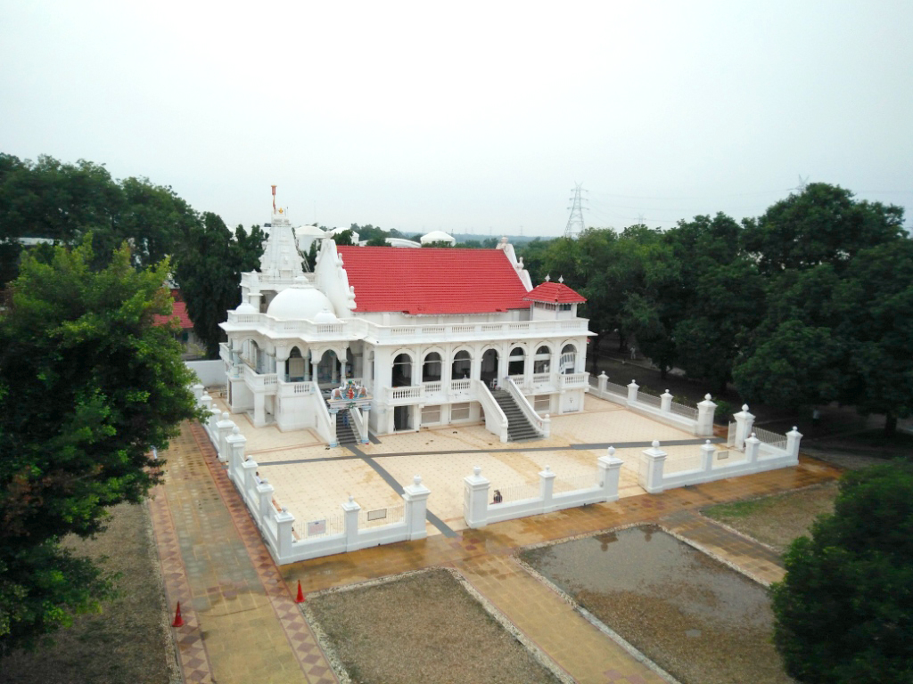

<div class="container-xxl bg-white p-0"
    style="background: linear-gradient(#ffffffad, #ffffffad), url(img/vicharan-bg.jpg) no-repeat fixed;">

    <!-- header part comes here -->

    <!-- Vicharan Details Start -->
    <div id="colorpad" class="container mt-3" style="border-radius: 15px;">
        <div class="text-center mx-auto mb-5 wow fadeInUp" data-wow-delay="0.1s" style="max-width: 600px;">
            <h1 class="mb-3">AGAS</h1>
        </div>
        <div class="row g-4 justify-content-center">
            <div class="col-lg-2 col-md-3 col-sm-12 wow fadeInUp" data-wow-delay="0.1s">``
                <div class="position-relative">
                    
                </div>
            </div>
            <div class="col-lg-8 col-md-6 col-sm-12 wow fadeInUp" data-wow-delay="0.1s">
                <div class="position-relative">
                    
                </div>
            </div>
            <div class="col-lg-2 col-md-3 col-sm-12 wow fadeInUp" data-wow-delay="0.1s">
                <div class="position-relative">
                    
                </div>
            </div>
            <div class="col-lg-10 col-md-12 col-sm-12 wow fadeInUp table-responsive" data-wow-delay="0.1s">
                <table class="table table-hover table-bordered border-dark border-5 text-center">
                    <thead>
                        <tr>
                            <th id="colorpad">
                                <h3 style="color:black;">Ashram Timings</h3>
                            </th>
                            <th id="colorpad">
                                <h3 style="color:black;">Facilities Available</h3>
                            </th>
                        </tr>
                    </thead>
                    <tbody>
                        <tr>
                            <td>
                                <h5 style="color:black;">04:00 AM - 09:00 PM</h5>
                            </td>
                            <td>
                                <h5 style="color:black;">Stay + Food</h5>
                            </td>
                        </tr>
                    </tbody>
                </table>
            </div>
        </div>

        <div class="row justify-content-md-center g-4">
            <div class="col-lg-10 col-md-12 wow fadeInUp" data-wow-delay="0.1s">
                <div class="h-100 d-flex flex-column" style="text-align: justify;text-justify: inter-word;">
                    <h2><br>Shri Sanatan Jain Dharma Shrimad Rajchandra Ashram</h2>
                    <ul>
                        <li>
                            The Ashram is established by Pujya Shri Laghurajswami (Param Pujya Prabhushriji) in Vikram
                            Era 1976
                        </li>
                        <li>
                            Age: More than 100 years ago. Shrimad Rajchandraji himself had forecasted that this will be
                            a Punya Bhumi.
                        </li>
                        <li>Param Pujya Prabushriji was endorsed by Shrimad as a True Gyaani.</li>
                        <li>
                            Shrimad handed over to Param Pujya Prabhushriji for enforcement of a True religion and then
                            P.P. Prabhushriji handed it over to Pujya Bramhchariji. Thereafter, no further handover has
                            been seen, as this place is reserved only for Aatmagyaani. But both
                            Prabhushriji and Pujya Bramhchariji never considered them as a Guru but endorsed Shrimadji
                            as Our Only Guru.
                        </li>
                        <li>
                            Motto of this Ashram to get burn the seed of all the sorrows majorly birth and death cycle.
                        </li>
                    </ul>
                    <h2>Uniqueness of the Ashram</h2>
                    <ul>
                        <li>
                            Despite no Physical Pratyaksh Guru but what is definitely present here is Aagya of a
                            Pratyaksh True Guru.
                        </li>
                        <li>
                            The whole Aaradhna Kram of more than 10 hours is designed by P.P. Prabhushriji. There has
                            mainly been no change in the kram since more than 100 years.
                        </li>
                        <li>
                            The “Pratishta” of this Ashram was done under the supervision of P.P. Prabhushriji.
                        </li>
                        <li>
                            The Aaradhna Kram comprises of Devotional Bhakti, Taatvik Bhakti, Aalochana / Pratikraman,
                            Various Holy Bhaavnas, Satsang etc. This is the Agya Kram given by Gyani.
                        </li>
                        <li>The Ashram has a huge library of Religious Books.</li>
                        <li>
                            Ashram has Digamber and Shwetamber Mandir to avoid conflicts in lieu of Dharm and Gacch.
                        </li>
                        <li>
                            Prabhushriji himself said that this place is a strongest reason for Samadhi Maran. He has
                            set a 36 Maala Aaradhna Kram for Samadhi Maran which is a sure shot reason for the Samadhi
                            Maran.
                        </li>
                    </ul>
                </div>
            </div>
        </div>

        <!-- fancy box start -->

        <div class="mt-12 mb-8 px-6 text-center text-lg md:text-2xl font-semibold">
            <h1>Ashram Darshan</h1>
        </div>

        <div class="align-img flex flex-wrap gap-5 justify-center max-w-5xl mx-auto px-6">

            <a data-caption="Entrance gate engraved with क्षमा ए ज मोक्ष नु भव्य दरवाजो छे" data-fancybox="gallery" href="img/a1.jpg">
                
            </a>

            <a data-caption="<center>Arial view of the Ashram</center>" data-fancybox="gallery" href="img/a2.jpg">
                
            </a>
            <a data-caption="<center>Mul Sabhamandap<br>
                    The chitrapat was ordered from Paris by Hiralalbhai Jhaveri.<br> There is a beautiful transit history of this chitrapat.<br> Please do visit Ashram to know more about it.
                    This place is sanctified by Lotusfeet of P. P. Prabhushriji.</center>" data-fancybox="gallery" href="img/a3.jpg">
                
            </a>
            <a data-caption="<center>Shwetambar Temple<br>
                    Mul Nayak is Chandra Prabhu Swami. This temple is right above the Guru Mandir.<br>
                    Digambar Temple<br>
                    Mul Nayak is Chandra Prabhu Swami. It is above Shwetabar temple.<br> There is a black idol of
                    Parshwanth Bhagwaan which has a sparkling history. Do visit to the temple to know the history.</center>" data-fancybox="gallery" href="img/a4.jpg">
                
            </a>
            <a data-caption="<center>SOUL OF THE ASHRAM - GURU MANDIR<br>
                    This Guru Madir is made by Mumukshus and not by Laborers.<br>
                    Pran Pratistha was done by P. P. Prabhshriji and after completion of Pratistha,
                    Prabhushriji embrassed the idol of Param Krupalu Dev and said that now <span>&#8220;</span>Anjan-shalaka<span>&#8221;</span> has happened.<br>
                    Anyone attaining Samyak Darshan (Self realization) – this idol will play a role for that
                    soul.<br>
                    On one side of this idol is Lotusfeet of Param Krupaludev and other side Omkaarji</center>" data-fancybox="gallery" href="img/a5.jpg">
                
            </a>
            <a data-caption="<center>There is a 5 Metal Idol of Shrimad Rajchandraji in Standing Kausag Mudra.<br>
                    This Idol’s Pratishta is done by Param Pujya PRABHUSHRIJI. He said that Yatra to this Chapel is like doing Sametshikharji Yatra!!<br>
                    Once a Mumukshu asked Prabhushriji that “Its mentioned in one of the book that there are 72 steps to Moksh”. Param Upkaari Param Pujya Prabhushriji asked him to count the steps of this Chapel. They were also 72 steps. <br>
                    But this Chapel’s steps has later been renovated with increase in no. of steps for easy climbing.<br>
                    This is tallest building in the temple premises as an eye to all the activities happening in the temple. <br>
                    Below this Idol there is a huge library wherein you can find thousands of books of Jainism and Non Jainism.</center>" data-fancybox="gallery" href="img/a6.jpg">
                
            </a>
            <a data-caption="<center>New Sabhamandap<br> 
                    This whole Sabhamandap is built of White Marble with a 13 foot Golden framed grand portrait of Shrimad Rajchandraji.<br>
                    The 1st characteristic of this Chitrapat is that if one stands in front of this portrait and focuses on both toes of his divine feet, and moves either left or right then even his feet appear to move in that direction.<br>
                    The 2nd characteristic is that both palms of his hands has a distinctive eye like mark.<br>
                    It has a sitting capacity of around 2500 mumukshus.</center>" data-fancybox="gallery" href="img/a7.jpg">
                
            </a>
            <a data-caption="<center>Param Pujya Prabhusriji Samaadhi<br>
                    This land is sanctified as Prabhushriji had done his stunning Samaadhi Maran in Ashram and the last rites were performed on a sandalwood pyre in this place.<br>
                    There is an exclusive story on Samadhi Maran of Prabhushriji. To know more, please do visit the Ashram.</center>" data-fancybox="gallery" href="img/a8.jpg">
                
            </a>
            <a data-caption="<center>Pujya Bramhchariji Samadhi<br>
                    In V.E 2070 on Kaartak Sud 7, P. Bramhchariji completed his life cycle. His body departed but did amazing Samadhi Maran.<br> At 11.00 a.m., along with the Palanquin of Bramhchariji, the funeral procession proceeded.<br>After circumambulation of the Ashram, at 1.00 pm the procession reached the cremation site. Lastly, the erudite trustee of the Ashram, Shri Amrutlal Parikh with tears in his eyes extolled the departed and as a final gesture of respect.</center>"
                data-fancybox="gallery" href="img/a9.jpg">
                
            </a>
            <a data-caption="<center>Shri Raj Mandir Temple(Shanti Sthan)<br>
                    Residences of Param Pujya Prabhushriji and Pujya Bramhchariji<br>
                    This is the place where A seed of a True religion- Sadguru Agya (Oath) taken by Moksh seekers. This is the heart of the Ashram.</center>" data-fancybox="gallery" href="img/a10.jpg">
                
            </a>
        </div>
    </div>
    <!-- Vicharan Details End -->

    <!-- footer part comes here -->

</div>